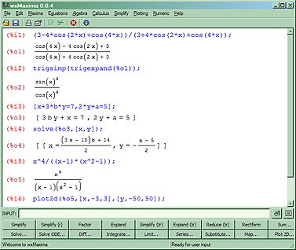
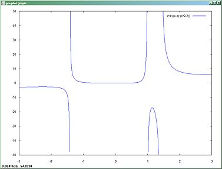
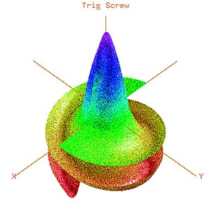
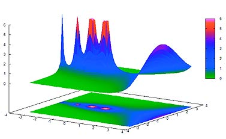
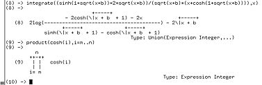
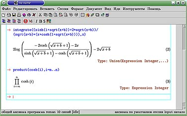

Вадим Житников. Компьютеры, математика и свобода
Материал был опубликован в «Компьютерра» №16 (636) в апреле 2006 г.
В давние, давние времена компьютеры занимались только своими прямыми обязанностями: они считали. Складывали и вычитали, решали системы уравнений, интегрировали и дифференцировали. Рассчитывали траектории баллистических ракет и аэродинамические характеристики самолетов, предсказывали погоду и моделировали атомные реакторы. С тех пор отношение к технике, которая когда-то называлась вычислительной, сильно изменилось — и сейчас во многих домашних и офисных компьютерах самой сложной «математической» программой является стандартный «Калькулятор». Неужели математика сдала свои позиции в эпоху персональных компьютеров?
Компьютеры и математика
Разумеется, это не так. Просто компьютеры в полной мере демонстрируют свое главное свойство: быть универсальным устройством — каждый получает от них то, что ему нужно. Так что если вы являетесь студентом, инженером или научным сотрудником и вам требуется решать на ПК именно математические задачи, то современные компьютеры открывают перед вами самые широкие возможности.
Существует множество программ, предназначенных для узкоспециализированных математических расчетов. Больше всего известны и широко распространены универсальные пакеты-комбайны, пригодные для занятий самой разной математической деятельностью. По функциональности они делятся в целом на две категории: пакеты, предназначенные в основном для численных расчетов (например, MatLab) и системы компьютерной алгебры (Computer Algebra System), к которым относятся Mathematica, Maple и (отчасти) MathCAD — они также называются системами символьных или аналитических вычислений (Symbolic Manipulation Program). Это наиболее универсальные математические программы, способные решать самые разные задачи, причем как численно, так и точно — аналитически.
Возможностей у подобного софта — множество, и есть только одна проблема: все эти программы довольно дороги. А как же свободное программное обеспечение, спросите вы? Оказывается, и здесь дело обстоит неплохо. Существуют альтернативы как для MatLab (системы Octave и Scilab), так и свободные системы аналитических вычислений — Maxima и Axiom. О последних и поведем речь.
Системы аналитических вычислений
Но сначала чуть подробнее о том, что же умеют делать универсальные системы компьютерной алгебры, к которым относятся Maxima и Axiom. Если кратко, то подобные программы обладают «знаниями» алгебры и математического анализа в объеме первых курсов любого технического университета. Системы аналитических вычислений (САВ) умеют преобразовывать выражения: упрощать, приводить подобные, раскрывать скобки или, наоборот, группировать подобные члены. Они умеют вычислять производные, пределы и интегралы, решать системы алгебраических и дифференциальных уравнений, производить вычисления с матрицами. Могут упрощать и преобразовывать тригонометрические выражения. Все это делается точно, аналитически.
Рис. 1
Впрочем, не всякая задача имеет точное решение, и поэтому численные вычисления тоже не забыты, причем с рядом очень приятных особенностей. Так, величина целых чисел неограничена, а вычисления с плавающей точкой могут выполняться с любой заранее заданной точностью. Хотите увидеть факториал 1000 — пожалуйста! А ведь это число с 2568 цифрами. Хотите число π с сотней знаков после запятой — никаких проблем! Главное, чтобы хватило вычислительных ресурсов компьютера. Ну и наконец, построение красивых графиков — неотъемлемая часть любой системы аналитических вычислений. Математика — наука абстрактная, а человеческое мышление образно. Хорошо известно — подавляющая часть информации поступает к человеку через зрение, поэтому без визуализации математических данных не обойтись.
Рис. 2
Помимо основных математических возможностей, каждая система аналитических вычислений имеет встроенный язык программирования. С помощью этого языка возможности системы можно расширять, и каждая САВ имеет большую библиотеку пакетов для решения специальных математических задач.
Рис. 3
Посмотрим, как работает САВ не практике. На рис. 1 и 2 показано, как Maxima справляется с тремя задачками из курса школьной алгебры: упрощение тригонометрического выражения, решение системы линейных уравнений и построение графика функции y=x/[(x–1)(x2–2)]. Трехмерные графики выглядят еще интереснее. Axiom обладает своей собственной графической подсистемой, способной создавать двух- и трехмерные графики очень высокого качества. На рис. 3 изображена поверхность, известная как тригонометрический винт и построенная с помощью Axiom. А Maxima для построения графиков использует внешнюю программу gnuplot. Результат работы такой «связки» можно видеть на рис. 4. Давайте устроим маленькую математическую викторину — что за функция изображена на этом рисунке? Ответ найдете в конце статьи.
Рис. 4
Как видите, все довольно просто. Правда, и задачи тоже простые — они выбраны такими для иллюстрации. Но главная сила САВ в том, что они способны решать чрезвычайно громоздкие задачи. Например, Axiom может взять любой интеграл, если только он «берется» в элементарных функциях. Более того: в отличие от численных расчетов, являющихся по своей природе приближенными и потому не имеющих «доказательной силы» с точки зрения чистой математики, аналитические результаты, полученные с помощью САВ, вполне можно использовать для строгих математических доказательств. Но даже если вы не профессионал в математике и подобные возможности вам ни к чему, все равно использование САВ в виде интеллектуального калькулятора может быть весьма полезным.
Математика и свобода
Из далеко не полного перечисления общих возможностей САВ ясно, что подобные программы весьма сложны и требуют для своего создания больших усилий. Трудозатраты на такую систему оцениваются в несколько десятков человеко-лет и требуют от программиста солидной математической подготовки. Откуда тогда могли появиться свободные системы аналитических вычислений Maxima и Axiom? На самом деле оба пакета имеют весьма длительную историю.
Особенно любопытна «биография» Maxima. Все началось в 1967 году в Массачусетском технологическом институте. В рамках проекта создания искусственного интеллекта была инициирована разработка первой системы компьютерной алгебры Macsyma. Далее программа в течение многих лет использовалась и развивалась в университетах Северной Америки, где появилось множество вариантов системы. Maxima является одним из таких вариантов, созданным профессором Вильямом Шелтером (William Schelter) в 1982 году. В 1998 году он получил официальное разрешение Министерства энергетики США на выпуск Maxima под лицензией GPL. А начиная с 2001 года Maxima развивается как свободный международный проект, базирующийся на SourceForge.
История Axiom почти столь же долгая. Система аналитических вычислений Scratchpad развивалась с 1971 года как научный проект исследовательского центра имени Томаса Ватсона фирмы IBM. В начале 1990-х годов Scratchpad был продан фирме NAG (Numerical Algorithms Group) и переименован в Axiom. А в 2002 году NAG выпустила Axiom под свободной лицензией типа лицензии BSD (здесь можно попробовать Axiom в действии через веб-интерфейс).
Многообразие и свобода
Maxima и Axiom — полнофункциональные системы аналитических вычислений и по возможностям сравнимы с Mathematica и Maple. Тем не менее каждая из них имеет свои особенности. И в этом тоже есть элемент свободы — пользователи самого разного уровня подготовки и потребностей смогут найти себе подходящее орудие для работы.
Будучи самой первой системой аналитических вычислений, Maxima развивалась прагматически. В результате получилась программа, довольно простая в освоении и использовании людьми даже без специальной подготовки. Ну а продвинутые пользователи, несомненно, оценят тесную интеграцию Maxima с языком Lisp, на котором система реализована.
Maxima отлично документирована — объемное справочное руководство описывает практически все встроенные функции системы. Это руководство интегрировано в программу в виде онлайнового справочника, оснащенного средствами поиска. Не прерывая работы с Maxima, можно легко найти необходимый справочный материал. Руководство уже переведено на несколько языков, и в настоящее время переводится на русский.
Математика — наука точная. Все свойства и взаимосвязи математических объектов четко определены или доказываются при помощи строгих логических рассуждений. Axiom является единственной САВ, которая последовательно реализует данный подход на уровне компьютерной программы. Для этого язык Axiom сделан строго типизированным. Концепция строгой типизации в языках программирования хорошо известна, но в Axiom это выливается в нечто необычное — типы языка представляют собой типы математических объектов (числа, полиномы, ряды и т. д.). Axiom «знает» около тысячи иерархически организованных математических категорий и типов. Строгая математическая типизация Axiom уникальна, ничего подобного нет ни в одной другой системе аналитических вычислений.
С документацией у Axiom тоже все обстоит отлично. Имеется интерактивная гипертекстовая справка и книга, детально описывающая все аспекты работы с Axiom. Эта книга была даже издана, а новая, существенно расширенная версия свободно доступна на сайте проекта в формате PDF. К сожалению, вся документация только на английском языке.
Компьютеры и свобода
Есть еще один элемент свободы — свобода выбора платформы. Особенно в этом отношении хороша Maxima. Она успешно работает на всех современных операционных системах: Windows (готовые сборки доступны на сайте проекта), Linux и UNIX, Mac OS и даже на КПК под управлением Windows CE/Mobile. Переносимость Axiom чуть хуже: система работает под Linux, UNIX, а под Windows пока не работает построение графиков.
Главную роль в переносимости Maxima и Axiom играет язык Lisp, на котором они написаны. Исторически Lisp имеет очень большое количество несовместимых друг с другом диалектов, но сейчас эпоха разнообразия закончилась, поскольку появился официальный стандарт ANSI Common Lisp. Maxima была модифицирована в соответствии с этим стандартом, и в результате она может работать под управлением разных реализаций Common Lisp, как свободных, так и проприетарных. Axiom пока работает только с GCL (GNU Common Lisp), но принципиальных сложностей с переносом на другие Common Lisp системы не существует.
Компьютеры и человек
До сих пор мы говорили о математических возможностях Axiom и Maxima.Но есть еще один важный аспект — взаимодействие с программой. Традиционно все системы аналитических вычислений, включая Axiom, Maxima, а также Maple и Mathematica, имеют простой текстовый интерфейс. И это создает определенные проблемы — как отобразить в удобочитаемом виде математические выражения со всеми их радикалами, скобками и знаками интегралов? Приходится прибегать к своеобразному ASCII Art. Пример того, что получается, представлен на рис. 5, где изображен результат вычисления интеграла и произведения в системе Axiom. Довольно неплохо, но вряд ли вполне соответствует современным потребностям. Поэтому все системы аналитических вычислений имеют графические пользовательские оболочки, способные представить данные красиво и облегчающие взаимодействие с пользователем.
Рис. 5
Одной из таких оболочек для Axiom и Maxima является TeXmacs. TeXmacs — это вполне самостоятельная программа, научный WYSIWYG-редактор. Помимо своего основного назначения, он может использоваться как графическая оболочка для ряда программ с текстовым интерфейсом. На рис. 6 изображена работа Axiom под управлением TeXmacs: те же самые интеграл и произведение, что и на рис. 5.
У Maxima есть несколько других оболочек, лучшей из которых является wxMaxima. На рис. 1 — работа Maxima под управлением wxMaxima. Тем не менее нужно признать, что по функциональности графические оболочки свободных систем аналитических вычислений пока уступают коммерческим аналогам.
И это не конец
Axiom и Maxima — результат коллективного труда сотен людей. Несмотря на свой солидный возраст, системы продолжают активно развиваться. Новые релизы Axiom выпускаются каждые несколько месяцев, ежегодно проводится семинар, целиком посвященный Axiom.
Рис. 6
Последний релиз Maxima 5.9.3 выпущен 19 марта текущего года, спустя пять месяцев после предыдущего. Интерес к обеим системам со стороны как пользователей, так и разработчиков весьма отраден: уже сейчас в руках исследователей-математиков есть очень мощные свободные инструменты, которые со временем будут становиться только лучше.
И наконец, ответ на вопрос мини-викторины: на рис. 4 изображен график модуля гамма-функции на комплексной плоскости в районе 0.